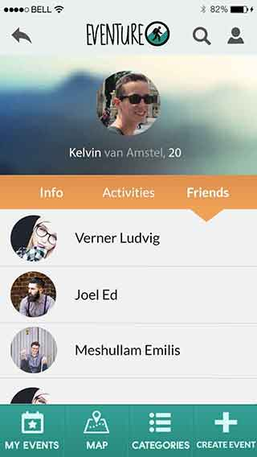
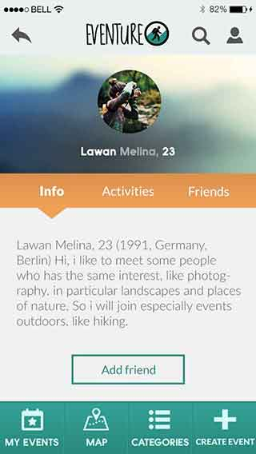

Project:
Ontwerp en ontwikkel een applicatie voor een bepaalde doelgroep. Deze applicatie moet het sociale contact bevorderen door middel van NFC.
Mijn taak:
Visual Designer en Tester. Ik heb mijn bijdrage geleverd in het ontwerp van deze applicatie. Daarnaast heb ik testplannen opgezet en testen afgenomen.
Het eindproduct:
Onze applicatie is ontwikkeld voor backpackers. Ze kunnen met onze applicatie in het gebied waar zij zijn zoeken naar andere personen en activiteiten waar zij zich bij aan kunnen sluiten.
Nieuwsgierig?
Lees verder voor meer verdieping in dit project.
NFC?!
NFC, daar moesten wij mee werken. Wat het betekende? Wij wisten het ook niet. Dus dat was de eerste week het hoofddoel, kennismaken met NFC en wat het nu precies doet en kan. Wij waren een startup die met weinig een plan moesten gaan maken om uiteindelijk een product neer te zetten. Dit product moest ook echt toonbaar zijn aan het einde van het project. Wij moesten namelijk tijdens dit project een applicatie ontwerpen en een prototype maken, die het offline contact bevorderd met behulp van NFC. Dus… dat allemaal.
Wij zijn eerst begonnen met het kennismaken met NFC. Het staat voor Near Field Communication en eigenlijk kent bijna iedereen nu wel iets wat te maken heeft met NFC, bewust of onbewust. Contactloos pinnen, OV-chipkaart of een pas voor de sportschool.
Tijdens dit project ben ik voornamelijk bezig geweest met het ontwerpen ervan en het testen van de schermen. Ik heb vooral gebruik gemaakt van invisio. Dat is een programma, waarbij je afbeeldingen van schermen zo kan instellen dat het werkt als een echte bestaande applicatie. Dit was de eerste keer dat ik echt als vormgever te werk ging. Normaal deed ik vooral iets wat ik gewend was, zoals documentatie of iets technisch. Zelf ben ik ook erg trots dat de vormgeving goed gelukt is. Ik wil daarom ook graag meer hiermee doen.
Ik heb echt heel veel geleerd en heel erg naar mijn zin gehad. Dit was een superleuk project. Ook omdat je zelf je doelgroep moest gaan bepalen en zo de applicatie vorm kon geven. Je kon het dus helemaal je eigen maken. Wij hebben voor uiteindelijk een applicatie ontworpen voor backpackers. Mobiele data in het buitenland is namelijk niet heel goedkoop. Wij wilden ervoor gaan zorgen dat zonder internet mensen toch activiteiten makkelijk zouden kunnen vinden en andere mensen zouden kunnen gaan ontmoeten.
Wat wij hebben bedacht is het volgende. Een hostel, hotel of restaurant kan een NFC paal neerzetten. Met behulp van onze applicatie kun je inloggen bij een paal en daarmee gebruik maken van de applicatie. Je ziet dan in de omgeving waar wat te doen is, wie er allemaal bij zullen zijn en je kan zelf eventueel activiteiten starten. Op deze manier motiveer je de gebruiker om snel en gemakkelijk andere mensen te gaan ontmoeten direct, of indirect via leuke activiteiten di eer te doen zijn.
Jammer genoeg is er geen werkende applicatie meer. Ik heb enkele screenshots nog hierbij kunnen zetten, zodat samen met de rapportage het beeld van het doel van de applicatie duidelijk wordt.
Dit was eigenlijk het project in een notendop. Er is namelijk ook veel getest, waar ik deels verantwoordelijk voor was, en onderzoek gedaan. Voor het testen zijn testplannen geschreven, uitgevoerd en uiteindelijk nieuwe conclusies uit getrokken. Wil je meer lezen hoe alles is getest en gegaan is tijdens dit project? Bekijk dan eens ons teamrapportage.